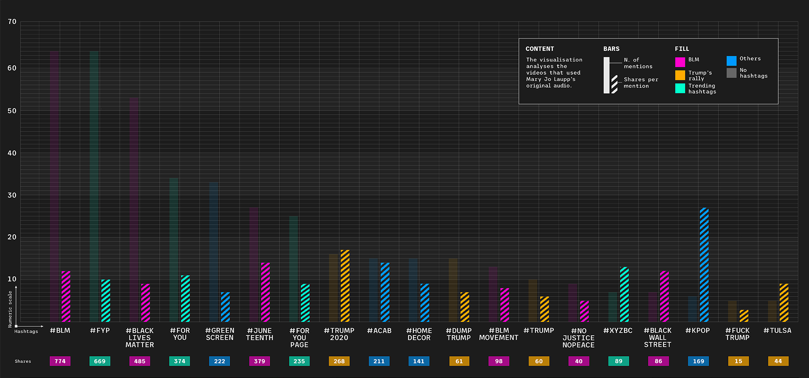
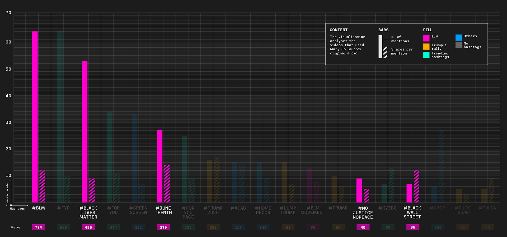
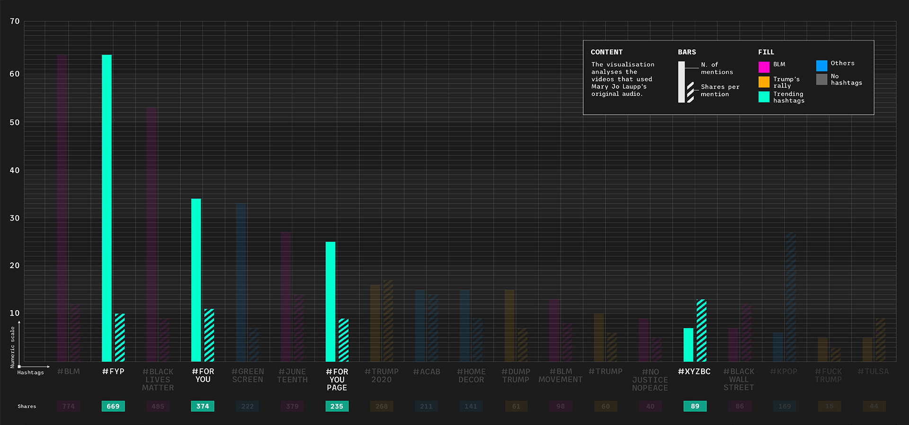
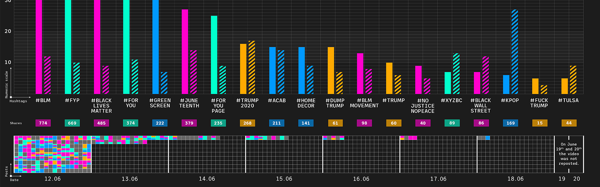

In June 2020, during his presidential re-election campaign, Donald Trump organized a rally, despite protests from the African American community and recommendations about possible Covid-19 infections. It was boycotted through a collective action initiated by a video on TikTok, posted on June 12, which went viral. This visualization aims to analyze which hashtags were the most effective in spreading the video on the platform
#kpop has been mentioned in 6 videos and has been shared a total of 169 times. Considering an average of shares per mention, in this case 28, #kpop videos appear to be the most effective.
The most recurrent hashtags are connected to the Black Lives Matter movement, which is the community that has been boycotting this event since it was first announced. 
Some of the most popular hashtags are not related to the rally at all: they were used to make the videos trend on TikTok (e.g. #fyp, #foryou, #homedecor, etc).
The peak of publications occurred on June 12th, while from June 14th the number drastically decreased. On the two days before the rally, Mary Jo Laupp's video was not re-used at all. 